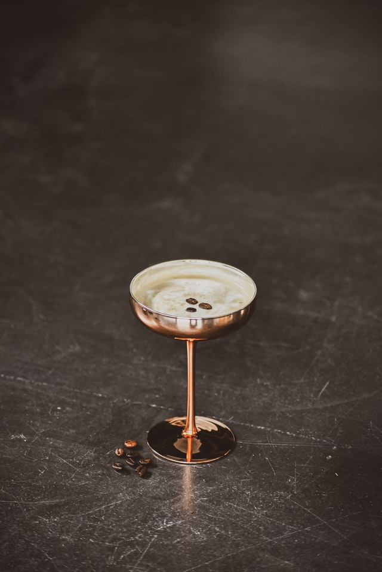

Espresso Martini

HISTORY
The now-classic drink was invented by British bartender Dick Bradsell at Fred’s Club in London. Legend has it
that a "top model" asked for a drink that would “wake me up and f**k me up” at the same time. Bradsell complied,
mixing vodka with espresso and coffee liqueur, and the Espresso Martini was born.
INGREDIENTS
- 2 ounces of Vodka
- 1/2 ouce of coffee liqueur
- 1 ounce freshly brewed espresso
- 1/2 ounce simple syrup
- Coffee Beans
STEPS
- Add Vodka, coffee liqueur, espresso and simple syrup to a shaker filled with ice and shake until
well-chilled
- Strain into a chilled cocktail glass
- Garnish with 3 cofee beans